화합물의 개요와 지방족화합물-탄화수소
공업화학은 울고들어가서 웃고 나오는 과목이라고들 한다. 처음에는 외울것도 많고 양에 압도되는 느낌이 드는데, 나중에는 앞에 나온 내용이 계속 반복되기 때문이다.
공업화학은 너무 범위가 넓고, 개념이 연결되는 게 아니라 그냥 여러 정보를 던져두는 형식이라 처음 접근할 때 어디서부터 해야될 지 모르기 때문에, 사실상 화공의 진입장벽을 맡는 과목이라고 보면 된다.
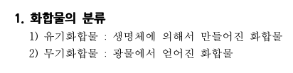
보통 유기화합물은 탄소화합물이 많다.
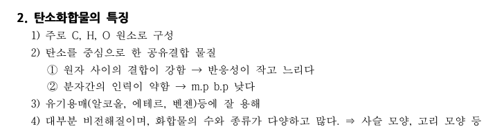
탄소화합물에는 대표적으로 탄화수소가 존재한다.
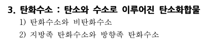
방향족=벤젠고리가 있음. 벤젠고리가 없다면 지방족이라고 보면 된다.
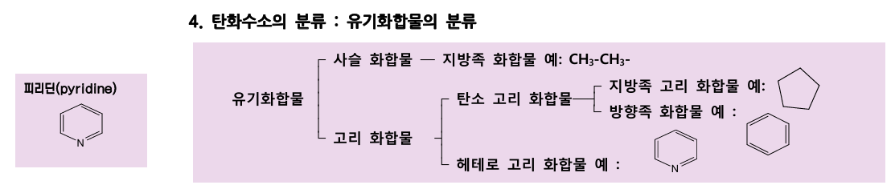
유기화합물은 사슬처럼 길게 이어지는 사슬화합물과, 고리가 있는 고리 화합물로 나뉜다. 이때 고리도 삼각형 고리, 오각형고리가 있으면 지방족이고 만약 벤젠고리가 있으면 방향족이라고 부른다. 질소 하나가 붙은 피리딘도 헤테로 고리 화합물인데, 이것도 그냥 방향족이라고 보면 된다.
이제 지방족 탄화수소를 살펴보자.
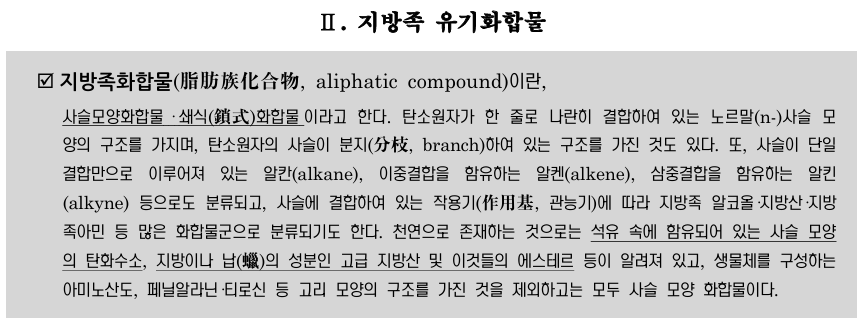
알케인, 알켄, 알킨 이렇게 3가지가 존재한다.
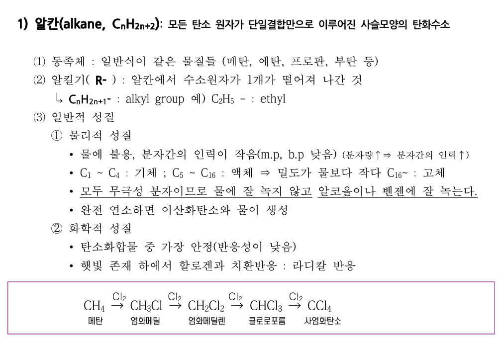
-알킬기라는, 알케인에서 수소가 하나 떨어지고 그부분이 작용기가 되는 변종이 존재한다. 메틸 에틸 프로필 부틸 펜틸 등이 존재한다.
-전부 무극성으로 물에 안녹고 벤젠에 잘녹는다. 완전연소시 이산화탄소와 물이 생성된다.
-할로겐 치환반응이 존재한다.
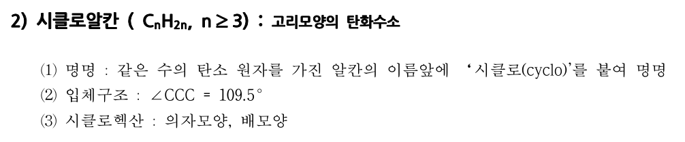
이건 알케인의 변종인데, 고리가 있는 것이다. 지방족 사슬이 아닌 지방족 고리 화합물이라고 보면 된다. 109.5도는 헥산만 적용된다.
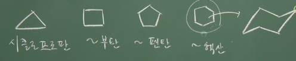
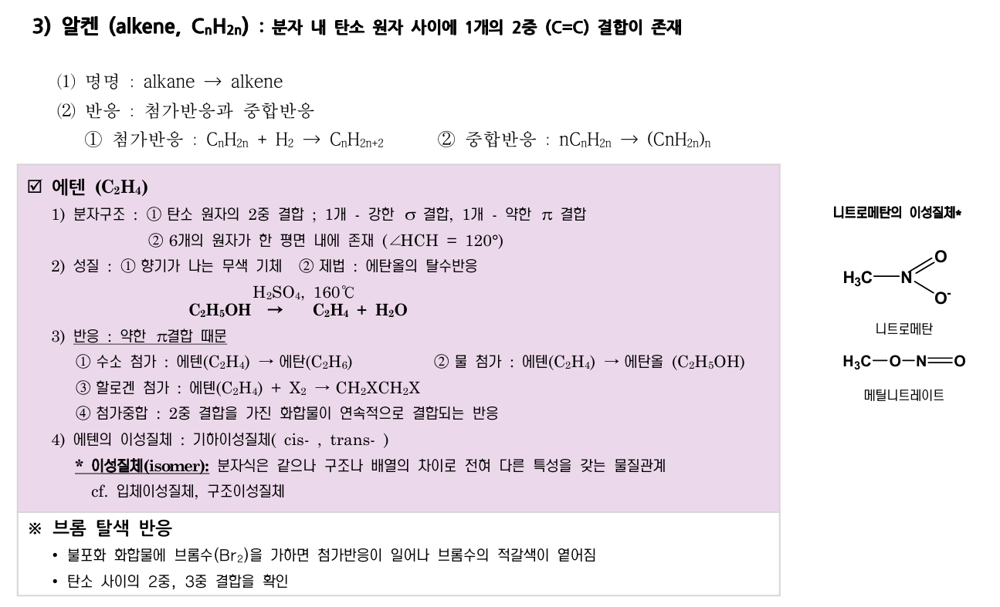
얘는 2중결합이 1개가 중간에 있는 탄화수소이다. 대표적인 예시는 에텐이 있는데, 얘는 수소나 물, 할로겐 등이 하나 추가되면 알케인 구조로 바뀌게 된다.
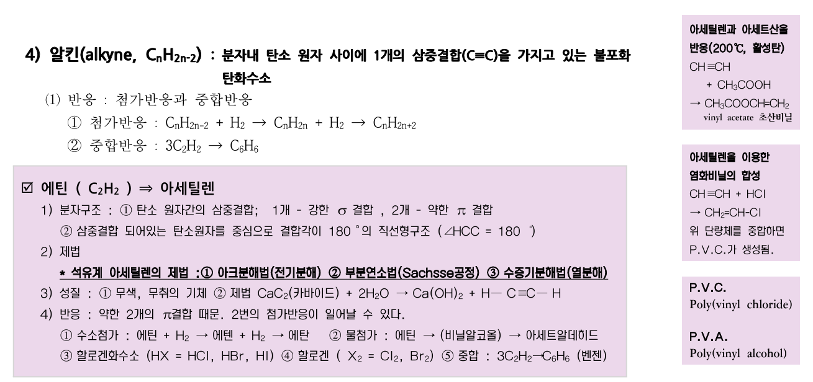
알킨은 탄소가 3중결합을 한 것인데, 대표적으로 에틴이 존재한다. 마찬가지로 수소, 물, 할로젠 원소 등을 추가할 수 있다. 또 중합으로 벤젠이 될 수도 있다. 제법을 외워야하는데, 아 부 수(아크분해법(전기분해), 부분연소법, 수증기열분해 법) 라고 외운다.
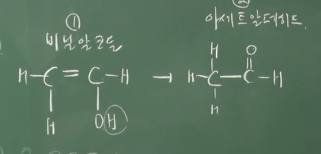